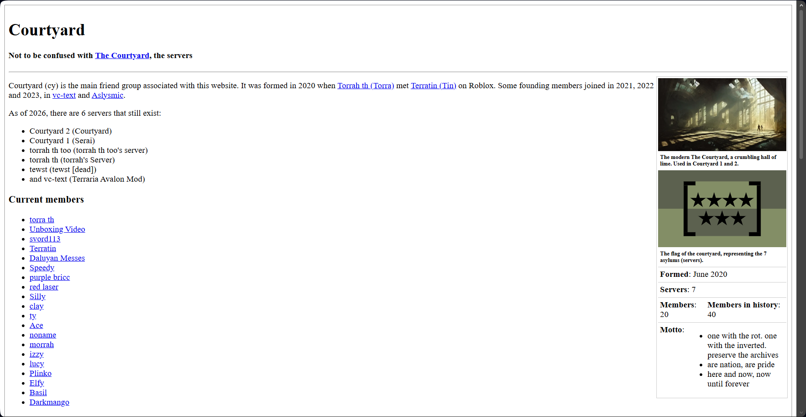
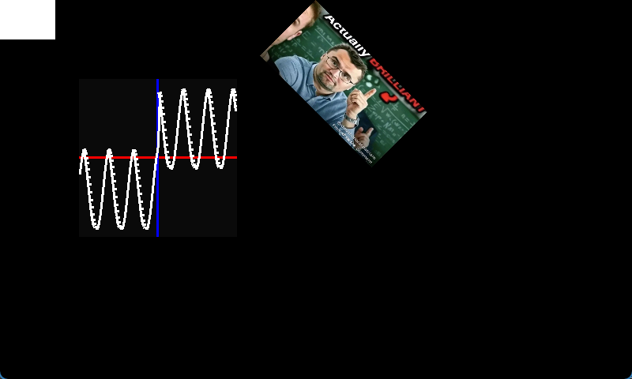
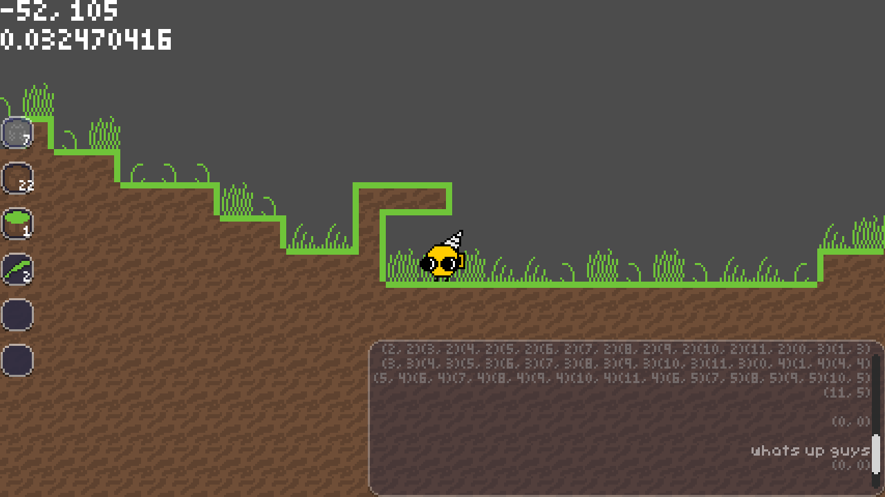
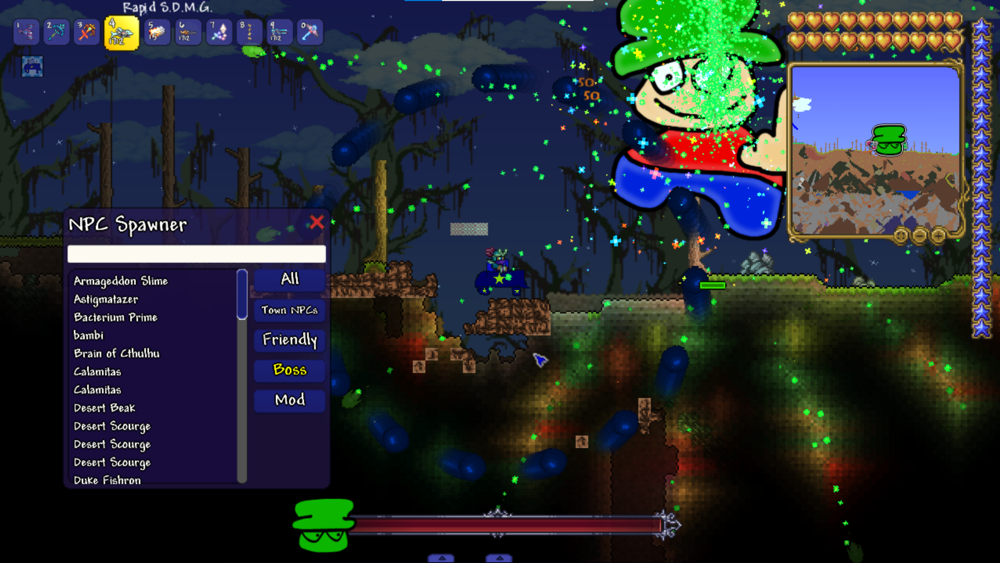

my work
art, projects, programming work and real life activity
art - programs: software, hardware and more
on github alone i have 56 repositories i own, including 15 forks along with 4 repositories i have contributed to in the past year. my github account was made on july 28th, 2021 with a total of 618 contributions since.
below is a list of playable-online games/projects that are up on the internet for you to play whenever. basically, theyre websites. most are embedded, but if you want to actually experience them its best if you just open them in a new tab.
the torraverse
a universe generator based off starbound ui
comes with viewing solar systems and stuff. sadly you cant exit solar system view rn
play here: unboxingvideoreal.github.io/the-torraverse, or click the header
controls:
- 1 for universe view, 2 for galaxy view
- pan to move around, or use wasd
- shift to move 2x slower
- right-click on stars to enter the solar system, click planets to view stats
- e to open/close settings
- right click planets/stars in solar system view to edit names
- middle click planets to view an elevation map, click anything to exit elevation view
- space to make a new universe
unboxingest rooms
rooms game made in scratch/turbowarp
i cant embed it here cause its wayy too big. click on the links above or below to play. its gonna take a while to load, so be careful.
play here: ur13testt.onrender.com, or click the header
the unboxing archives
archive of my stuff sometimes i update it
started this website in like 2022/2023
if youre gonna open images and stuff, open the website itself and dont use the embed cause you wont be able to navigate it efficiently otherwise
the intersection
an art project website based off https://angusnicneven.com/
very old, doesnt reflect me all too much anymore but i still like it
i HEAVILY recommend you open it on another tab, it is very interactive and will break when trying it out in the embed.
bambi civilization fangame
one of my oldest projects started in like 2021. its a fangame of a pretty bad rpgmaker game, and i just added a bunch of other stuff to do
i got my friends hooked on this game in middle school, they would play it every day and it encouraged me to keep updating it. it was very grindy, but it was fun
i also recommended you open this on another tab, its gonna be weird in an embed otherwise
courtyardsharp.github.io
the "homepage" for my community that i have grown up with since 2021. i made this for fun, but it is a good piece of history for that community. as such, it is very outdated.
i made a github account for the community that anyone in it could use, along with a gmail and youtube. more on that in the my inspiration page
i also recommended you open this on another tab, its gonna be weird in an embed otherwise
-- end of interactives --
i have been programming since 2020 (maybe 2019, but i have no proof). i started in 5th grade, when i first learned what scratch was and i fell in love with it. i discovered making clones, and my first program was a forever loop that made a new clone constantly. i dont know how i did it if that was the first memory i had of scratch, so maybe i did actually start in 2019.
my favorite game was, and still is, terraria. it influenced my life so much that it was the reason i decided to dedicate so much time to learning C#. i joined development teams for terraria mods, beta tested my favorite mod (exxo avalon) and met the people that would become my greatest inspiration in life, my best friends.
terraria and the communities i met are the reason i love programming so much. i believe it has changed my life for the better, greatly improving my ability to think logically and algorithmically. i also think it has made me a more likeable person, because i think of life in a more standardized way that other people might think in, compared to thinking in my own way that nobody else thinks in.
below are a list of github repositories and images to projects i have made in the past. most of these are downloadable and usable, though some might be insanely outdated or completely dead.
TheAtheneum
a sort of 'wikipedia' for my community that i never finished and never uploaded
github.com/CourtyardSharp/TheAtheneum

boxMos_Graph
calculator made in MonoGame capable of graphing functions using Roslyn. made for an AP Computer Science Principles AP Project
inspired by the TI-Nspire CX II
i originally started with a bigger scope for the project, a graphing and scientific calculator with the ability to simplify expressions, but time was running out and i hated working on it (was called the unboxing abacus) so i rebranded to boxMos and i made a new project in a weekend.
now, it is the first entry in the boxMos series of projects where i create educational programs used to display data in complex ways or programs made as proof of concepts for my ability to create tools to help
boxMos_NEXSCI
my latest project, and the 2nd installment in the boxmos series, also made in monogame. it is not finished. the goal of the project is:
using nasa's online databases composed of all known information of exoplanets in existence - length of orbit around their star, what star they orbit, and more - i create a 3d model of all this information and create a little universe within the program that you can explore. graphs for all data points passed through the databases are made, along with the data being listed in the program itself. you can also navigate through the 3d model, seeing recreations of the exoplanets, stars and their star systems using all information given. i aim to make a map of humanity's knowledge of the universe with this project.
very lofty goal right? its probably going to last me a very long time, and i will probably be working on it well after i graduate high school.
i have already made a framework for ui that i will use - using code from boxMos_Graph (used for a graphing widget that allows me to place tiny little graphs of tables within the project) - and i plan to expand on it in the near future.
you can follow its progress here:
github.com/UnboxingVideoReal/boxMos_NEXSCI

orraria 2
a project i kinda gave up on, but i think i did really good on for it being my first godot game
it was a revamp of a scratch project of the same name (orraria). inspired by my friend torra's torraria, it is a sandbox game based off terraria that i never really finished, for the intricacies of coding world generation and tile stuff and all that simple yet complex stuff was too much for me to handle, so i stopped. similar to why the first one stopped.
you can still play it technically, but theres not much fun in it. and i probably wont continue it
github.com/UnboxingVideoReal/orraria2

orraria
the first orraria! i dont feel like uploading the entire .sb3 file right now, but it does exist.
it being a scratch project and having the same goal of orraria 2 meant it was very very tedious to make, as well as being very laggy. but it was quite impressive!
i made it in early 2024, and stopped october of that year
Recolor Mod
the most iconic project of mine - my joke terraria mod
it was my one of first experiences with C#, though i had made terraria mods before, and i made it with the help of my friends
was one of the first mods for 1.4 tmodloader, i made it before the official release so it was made in the beta branch. so when 1.4 fully released for tmod, the mod was rendered unplayable. i tried reviving it, but i never succeeded.
github.com/UnboxingVideoReal/RecolorMod

-- end of repositories --
below are a list of games playable online, but not embeddable. basically, roblox games.
art - maps, writing and other arts

wawawawawa
in person activity - competitions and more
other
put the quantum computing thing here later